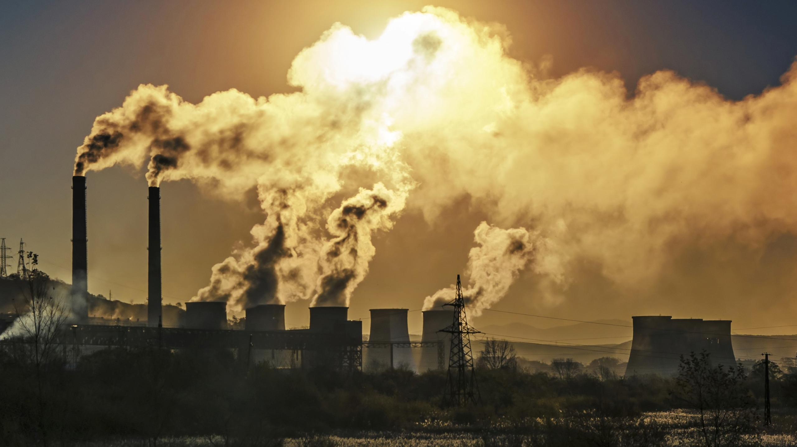

An introduction to Single Use Plastic Pollution -
Put simply, single-use plastics are goods that are made primarily from fossil fuel–based chemicals (petrochemicals) and are meant to be disposed of right after use—often, in mere minutes. Single-use plastics are most commonly used for packaging and serviceware, such as bottles, wrappers, straws, and bags.
Though plastic—a chain of synthetic polymers, essentially—was invented in the mid-19th century, it wasn’t until the 1970s that its popularity skyrocketed. Manufacturers began replacing traditionally paper or glass staples with lighter or more durable and affordable plastic alternatives; plastic jugs replaced milk jars, for instance. Since the 1950s, 8.3 billion metric tons of plastics have been produced, and half of that in the past 15 years alone.
The effects of Single Use Plastics and Single Use Plastic Pollution -
In 2015 researchers from the University of Georgia estimated that between 4.8 million and 12.7 million metric tons of plastic per year make their way into the oceans via people living within 30 miles of a coast. The majority of this pollution—dominated by single-use plastic waste—comes from countries lacking infrastructure to properly manage waste, particularly in Asia. India, for example, generates 25,940 tons of plastic waste every day but collects only 60 percent of it. (It’s also important to remember that waste management is just one part of the global materials cycle. For instance, a lot of the plastic produced in Asian countries is for products that serve U.S. demand—and the United States often sends plastic waste back to these countries for recycling.)
- Disposable plastic items don’t biodegrade. They just break down into micro particles that contaminate our environment.
- Microplastics, smaller plastic particles that result from single use plastic breaking down, pollute our water sources and even our food.
- Only 9% of plastic waste gets recycled. The rest is either burned or dumped.
- The single-use plastic trade and resulting plastic pollution disproportionately affects poorer and disadvantaged communities
Facts and statistics about Single Use Plastics (with images) -
Because single-use plastic is produced from fossil fuels, the process of extracting and creating these plastics emits huge amounts of greenhouse gases. It is estimated that just the extraction of these fossil fuels and their transportation to plastic factories emits 12.5 to 1.5 million metric tons of greenhouse gases.

Around 380 million metric tons of plastic are being produced yearly. 8.3 BILLION Metric Tons (9.1 BILLION US Tons) of plastic has been produced since plastic was introduced in the 1950s. The amount of plastic produced in a year is roughly the same as the entire weight of humanity.
Humans use about 1.2 million plastic bottles per minute in total. Approximately 91% of plastic is not recycled. Roughly half of our global annual plastic production is destined for a single-use product.
At least 14 million tons of plastic end up in our oceans every year. Many countries lack the infrastructure to prevent plastic pollution such as: sanitary landfills; incineration facilities; recycling capacity and circular economy infrastructure; proper management and disposal of waste systems.
Sources for the effects of Single Use Plastics:
- colorado.eu - Climate Impact Of Single Use Plastics
- greenpeace.org - Everything you should know about single-use plastic
- earthday.org - Single Use Plastic Fact File
- recyclenow.com - "The aim of Recycle Now is to build a nation where recycling is the norm and, together with our partners, help make a better world for future generations."